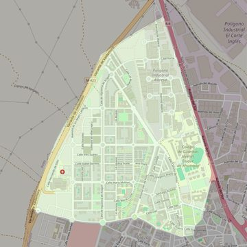

San Vicente de Paúl
- Arciprestazgo
- Valdemoro
- Población
- Valdemoro
- Dirección postal
- c/ María Curie, 15
- Código postal
- 28342
- Extensión
- 3,08 km² (308 ha)
- Teléfono
- 918 762 523
- Correo electrónico
- parroquiadesanvicentedepaul@gmail.com
- Información demográfica
- De la parroquia · De la población (Valdemoro) · Del arciprestazgo (Valdemoro)


Descargar mapaLímites según decreto
"Partiendo de la confluencia de la autopista A-4 con la entrada a la calle Las Tenerías, arrancan por el eje de la autopista A-4 hasta el límite con el término municipal de Pinto (en dirección noreste); siguen por los límites de los términos municipales de Valdemoro Pinto y Valdemoro-Torrejón de Velasco (suroeste), por una línea recta imaginaria hasta la calle Rosalía de Castro (este), por el eje de la calle Rosalía de Castro (este), por el eje de la calle Rio Manzanares (sureste), por el eje de la calle Don Ramón Areces (noreste), por el eje de la calle Las Tenerías (noreste) hasta la confluencia con la autopista A-4, punto de partida. (Boletín Oficial, diciembre de 2007, pág. 1232-1233